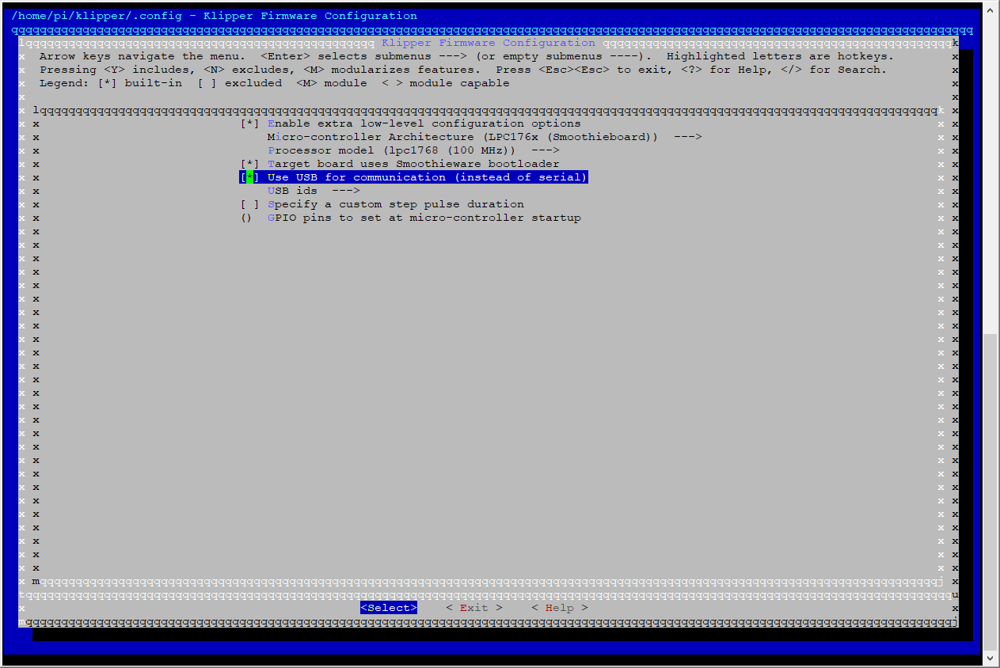

First and foremost, I would like to thank Arksine for this great tool. When I installed BetterBootLoader, I thought it was a lot more complicated, partly because I was unable to find any detailed installation instructions, especially on how to flash Klipper through USB. So I have decided to write these very short step-by-step installation instructions, in the hope it might help somebody installing this excellent tool in the future.
A word of warning: This potentially can brick (soft-brick) your SKRs if something goes wrong. If you have the proper programming tool, you might be able to reflash the original firmware back to the SKRs, but most people won’t have these. Be careful!
BetterBootLoader is a replacement for the stock firmware of the SKR or, for that matter, any LPC17xx-Board. The most important difference to the original firmware is that it allows installing Klipper on the SKR from the Pi through the USB connection without physical access to the SKR’s SD card.
This guide is written with a VoronDesign V2 printer in mind, which usually has two SKRs as controllers, but it will also work for other printers with the same control board. The described firmware will only install on compatible controllers that use a LPC17xx MCU. This includes the SKR 1.3 or 1.4 used in the Voron V1/Trident and V2. Do not attempt this on your SKR E3 mini in case you have a Voron V0 or Switchwire!
In addition, a Klipper environment that is set up and configured to operate properly is assumed. After going through this guide, you will be able to flash new Klipper versions to your SKRs without accessing the SD cards.
Things you need to prepare:
It does not matter if you do both SKRs at the same time or if you do them one at a time.
Copy the just downloaded betterbootloader.bin to the root directory of your SKRs’ SD cards and rename them to “firmware.bin”. Leave the “firmware.cur” file in there if it exists.
cd ~/klipper
git pull
make menuconfig
Enable USB communication (see image below) and Exit the configuration dialog.

make clean
make
/dev/serial/by-path/platform-3f980000.usb-usb-0:1.3:1.0
/dev/serial/by-path/platform-3f980000.usb-usb-0:1.5:1.0
A list of full paths for your SKRs can be shown by executing
ls -d1 /dev/serial/by-path/*
Or simply take them from your existing printer.cfg.
With these paths at hand, Klipper can now be flashed to the SKRs:
make flash FLASH_DEVICE=<path to first SKR>
make flash FLASH_DEVICE=<path to second SKR>
As an example, for my two SKRs it would look like this:
make flash FLASH_DEVICE=/dev/serial/by-path/platform-3f980000.usb-usb-0:1.3:1.0
make flash FLASH_DEVICE=/dev/serial/by-path/platform-3f980000.usb-usb-0:1.5:1.0
Make sure to replace the paths with those of your SKRs, if they are different. In the future you will be able to update Klipper on your SKRs with the steps shown above, starting from step 3.
Have fun and enjoy!
-kage-chan